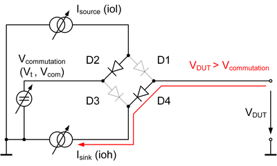
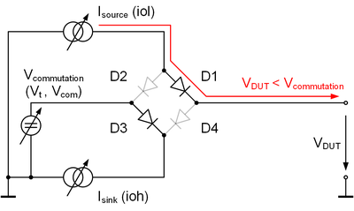
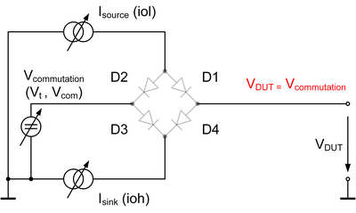

Active Load
The active load sources or sinks a current at a pin of your device. It is a component of the per-pin electronics and can be connected to a device pin by closing the AC relay of the corresponding test system channel.
The active load is used in the OutputDC test method. In the test method, a positive (source) or negative (sink) current is forced and the voltage at the pin is measured. This section explains the principles of an active load circuit.
The figure below shows the simplified circuit of an active load.

The current is adjustable within the technical specifications of the active load circuit. Depending on VDUT and Vcommutation the diode bridge sources or sinks current. The following three cases are possible:
- VDUT > Vcommutation
In this case diodes D2 and D4 conduct the forward current, diodes D1 and D3 block the reverse current. The active load sinks the current Isink.

- VDUT < Vcommutation
In this case diodes D1 and D3 conduct the forward current, diodes D2 and D4 block the reverse current. The active load sources the current Isource.

- VDUT = Vcommutation
This case is only possible if the active load sees an open end, for example when connected to a high-Z device output pin. No current flows.
